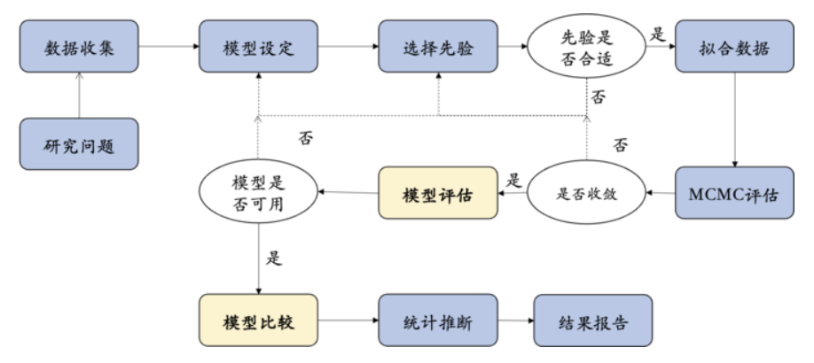
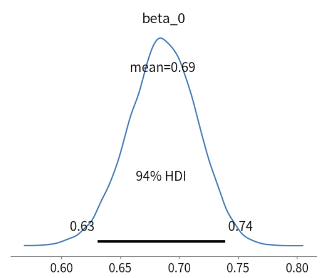

Part 1: Beta先验#
上一章的内容主要是关注了贝叶斯的思路： 我们如何根据信息更新自己对某个事件/变量的信念，并顺便比较了一下贝叶斯和频率学派对于同一事件的不同解读视角。
🎯接下来，我们将贝叶斯理念融入心理学研究中，探索其如何优化我们对认知过程的推理过程。
以随机点运动任务（Random motion dot task）为例#
随机点运动任务是一个经典的认知任务，是研究感知决策(perceptual decision making)的标准范式。
被试任务： （1） 被试观察屏幕上的点，这些点以不同的一致性水平随机移动。 （2）任务是判断这些点的主要移动方向（例如，向左还是向右）。
实验可以在人类和动物（例如老鼠）上进行，以探索人类和动物的大脑如何完成这一过程。
正确率与任务难度：
（1）任务难度由点的运动一致性决定。一致性低，点的主要方向不明显，任务难度大；一致性高，点的主要方向明显，任务难度小。
（2）正确率随一致性的增加而提高，通常在心理物理曲线中展示。
根据正确率的数据，我们可以使用心理物理曲线描述运动强度（点的一致性百分比）与决策正确率之间的关系：

Shooshtari, S. V., Sadrabadi, J. E., Azizi, Z., & Ebrahimpour, R. (2019). Confidence representation of perceptual decision by EEG and eye data in a random dot motion task. Neuroscience, 406, 510–527. https://doi.org/10.1016/j.neuroscience.2019.03.031
思考： 正确率这个指标与被试在每个试次上的关系是什么？回想一下刚刚讲到的频率主义与贝叶斯主义的区别。
例如，一个被试做了50个试次，正确了40个，他的正确率应当是80%。那么，我们是否能够用这几十个试次来估计这个被试准确判断出点运动方向的能力呢？实际上这种估计方法是有局限的：
局限： 1、正确率给出一个单一的指标，而不是对无法观察的“被试做正确的能力”进行估计 2、没有纳入估计的不确定性。
假如从贝叶斯的角度出发，我们根据被试在某种条件下的表现来估计其做正确的能力？
我们以Evans et al.（2020, Exp. 1） 的数据为例进行探索。
Evans, N. J., Hawkins, G. E., & Brown, S. D. (2020). The role of passing time in decision-making. Journal of Experimental Psychology: Learning, Memory, and Cognition, 46(2), 316–326. https://doi.org/10.1037/xlm0000725
# 导入必要的库
import scipy.stats as st
import numpy as np
import pandas as pd
import seaborn as sns
import matplotlib.pyplot as plt
import preliz as pz
from scipy.stats import binom
# 为 preliz 绘图设置图形样式
pz.style.library["preliz-doc"]["figure.dpi"] = 100
pz.style.library["preliz-doc"]["figure.figsize"] = (10, 4)
pz.style.use("preliz-doc")
# 使用 pandas 导入示例数据
try:
data = pd.read_csv("/home/mw/input/bayes3797/evans2020JExpPsycholLearn_exp1_clean_data.csv")
except:
data = pd.read_csv('data/evans2020JExpPsycholLearn_exp1_clean_data.csv')
# 选择特定模式的数据进行演示：
# 筛选 correct 为 1 的数据，并随机选取30个
data_correct_1 = data[data['correct'] == 1].sample(n=30, random_state=42)
# 筛选 correct 为 0 的数据，并随机选取20个
data_correct_0 = data[data['correct'] == 0].sample(n=20, random_state=42)
# 合并两部分数据，形成新的数据集
df = pd.concat([data_correct_1, data_correct_0], ignore_index=True)
# 只显示特定列
df[['subject', 'numberofDots', 'percentCoherence', 'correct', 'RT']].head()
这种数据结构是我们通常能看到的一种，第一列是被试编号，第二列是实验信息，比如在这个实验中指的是“每一个随机运动中有多少个点”。第三列是“点运动的一致性”，即有百分之多少的点在朝着同一个方向运动。最后两列分别是“正确与否”以及“反应时”，在这里我们主要关注的是“correct”数据。
# 非选课的同学，可以使用和鲸社区的“2024社区镜像”，运行以下的代码安装必要的模块，需要3-5分钟的时间完成加载
# 后续会有专门的社区公开镜像，给大家提前配置好运行环境
# 将下列代码行解除注释，删除“#”，运行即可：
# !conda install -y graphviz bambi=0.13.0 pymc=5.16.2 PreliZ=0.9.0 ipympl=0.9.4 pingouin=0.5.4
# docker部署和使用教程链接：https://zhuanlan.zhihu.com/p/719739087
# docker pull hcp4715/pybaysian:latest
# docker run -it --rm -p 8888:8888 hcp4715/pybaysian:latest
接下来，我们将通过该数据学习以下知识点：
1、如何为结果为“正确与否”的数据建立概率模型 2、如何为该类数据设置一个先验模型 3、如何通过数据来更新先验模型
连续变量的先验模型#
“正确与否（0/1）数据”的处理
在随机点运动任务中，被试正确探测出点的运动方向的取值范围在0-1之间，不同被试、不同条件下的真实的能力不同（与上节课的“重复成功率”类似）。
假如我们对人们在5%一致条件下进行正确判断的能力感兴趣。
如果我们还没有招募被试进行实验，则只能对被试在不同条件下的表现进行推断。根据先前的文献(Vafaei Shooshtari et al., 2019)，当随机点的一致性为5%时，个体的正确率约为70%。
Shooshtari, S. V., Sadrabadi, J. E., Azizi, Z., & Ebrahimpour, R. (2019). Confidence representation of perceptual decision by EEG and eye data in a random dot motion task. Neuroscience, 406, 510–527. https://doi.org/10.1016/j.neuroscience.2019.03.031
根据文献的信息，我们可以建立一个关于正确判断能力的先验分布： 例如，个体正确率为70%的概率为0.8，而个体正确率为60%或80%的概率为0.1 (这是我们上节课学习的内容🤓)。
那么，我们如何建立连续变量的先验概率模型？
# 创建离散先验分布数据
prior_disc = [0.1, 0.2, 0.3, 0.4, 0.5, 0.6, 0.7, 0.8, 0.9, 1.0] # 离散先验分布的取值
prior_dis_prob = [0, 0, 0, 0, 0, 0.10, 0.80, 0.10, 0, 0] # 对应的概率
prior_disc_data = pd.DataFrame({'ACC': prior_disc, 'f(ACC)': prior_dis_prob})
# 将'ACC'列的数据类型转换为字符串，以便在图表中正确显示
prior_disc_data['ACC'] = prior_disc_data['ACC'].astype('str')
# 创建一个单独的图表
plt.figure(figsize=(8, 5))
# 绘制离散先验分布的条形图
sns.barplot(data=prior_disc_data, x='ACC', y='f(ACC)', palette="deep")
# 设置图表的标题
plt.title("Discrete Prior")
# 移除图的上边框和右边框
sns.despine()
# 显示图表
plt.show()
从上面的先验概率分布图可以看出，在这么多可能的取值范围内，我们只取了3个值，其他的值默认概率为0。但实际上，其他地方也不一定为0，也就是说先验分布不一定都是离散型的分布。
Beta 先验模型#
⏰回顾一下离散型随机变量及其概率质量函数(probability mass function, pmf)
在随机点运动任务的例子中，假如正确率(ACC)只有几个可能的聚会，则其是离散型随机变量\(Y\)，可以通过概率质量函数来描述离散型随机变量在各特定取值上的概率，对所有正确率的取值来说，\(0≤ACC≤1 \)，并且\( ∑_{ally}f(ACC)=1\)，ACC取值的所有概率之和为1。
Continuous probability models
当正确率是一个连续的随机变量时，它服从于一个分布\(f(ACC)\), 又被称概率密度函数(probability density function, pdf)
概率密度函数（pdf）与概率质量函数（pmf）有类似的性质：
\(f(ACC)≥0\)
\(\int_{ACC}f(ACC)dACC=1\)，即\(f(ACC)\)曲线下的面积之和为1
当\(a ≤ b\)时，\(P(a<ACC<b)=\int^b_af(ACC)dACC\)
为正确率（ACC）选择一个合适的分布 – Beta分布
虽然我们潜意识里可能认为正确率服从正态分布，但是，在统计世界中存在着许多分布。
在这里，我们假设随机点运动任务中的正确率服从Beta分布。
选择Beta分布的关键在于，其取值范围满足[0,1]
此外，Beta分布通过两个超参数（hyperparameters），\(\alpha(\alpha>0)和 \beta(\beta>0)\)调节分布的形态。
\(ACC \sim Beta(\alpha, \beta)\)
Beta分布的参数：控制分布性质——\(\alpha\)和\(\beta\)
下面我们将展示调整\(\alpha\)和\(\beta\)的值，pdf形态将如何变化：
# 创建一个3x3的网格子图，每个子图的尺寸为10x10
fig, axs = plt.subplots(3, 3, figsize=(10, 10))
# 绘制 Beta(1, 5) 分布的PDF，并显示置信区间
pz.Beta(1, 5).plot_pdf(pointinterval=True,ax=axs[0, 0], legend="title")
pz.Beta(1, 2).plot_pdf(pointinterval=True,ax=axs[0, 1], legend="title")
pz.Beta(3, 7).plot_pdf(pointinterval=True,ax=axs[0, 2], legend="title")
pz.Beta(1, 1).plot_pdf(pointinterval=True,ax=axs[1, 0], legend="title")
pz.Beta(5, 5).plot_pdf(pointinterval=True,ax=axs[1, 1], legend="title")
pz.Beta(20, 20).plot_pdf(pointinterval=True,ax=axs[1, 2], legend="title")
pz.Beta(7, 3).plot_pdf(pointinterval=True,ax=axs[2, 0], legend="title")
pz.Beta(2, 1).plot_pdf(pointinterval=True,ax=axs[2, 1], legend="title")
pz.Beta(5, 1).plot_pdf(pointinterval=True,ax=axs[2, 2], legend="title")
# 自动调整子图之间的间距，以防止标签重叠
plt.tight_layout()
# 显示绘制的图形
plt.show()

从上面这些图可以看出来，当参数不同时，会得到不同形状的概率分布。
例如，当\( β=5 \)时，在接近0的这个区间内概率非常高，从0到慢慢接近1的这个区间，概率会逐渐下降。
当\( α=1，β=1 \)时，概率分布就是一个完全平的形状，我们一般称之为“uniform”，也叫做均匀分布，即从0到1之间的所有取值被抽取到的概率都是一样的。
当\( α和β \)值相同时，基本上就是一个对称的分布，随着\( α和β \)相同且取值越大时，就越接近一个正态分布。当\( α>β \)时，会更倾向于偏态分布。
图中的X轴是0到1之间的一个取值范围，Y轴则对应的是不同x值对应的可能性大小。而图中黑线的空心圆指代的是均值，加粗的黑线则代表置信区间，细线一般是指95%的置信区间。
我们可以通过调整\( α和β \)这两个参数，帮助我们建立直觉，这能够让我们找到一个更符合先验的分布。在这9个图中，最符合我们先验的分布可以很直观的看出来，那就是左下角的分布图（\( α=7和β=3 \)），因为它的均值在0.7左右。
Beta分布的概率密度函数pdf#
\(f(ACC)=\frac{Γ(α+β)}{Γ(α)Γ(β)}ACC^{α-1}(1-ACC)^{β-1} for ~ ACC \in[0,1]\)
简单了解：
\(\Gamma\)与阶乘有关
\(\Gamma(z)=\int^∞_0x^{z-1}e^{-y}dx 且Γ(z+1)=z \Gamma(z)\)
当\(z\)是正整数时，\(\Gamma(z)\)可以被简化为\(\Gamma(z)=(z-1)!\)
调整Beta先验
在这里我们选择ACC~Beta(70,30)作为合理的先验模型
关于为何\(\alpha=70\)，\(\beta=30\)，感兴趣的同学可自行查看课后bonus
带入公式，可以计算出先验\(f(ACC)\)的pdf：
pdf：
\(f(ACC)=\frac{Γ(100)}{Γ(70)Γ(30)}ACC^{69}(1-ACC)^{29} for ~ ACC \in[0,1]\)
下面是我们这个先验似然的可视化：
# 创建离散先验分布数据
prior_disc = [0.1, 0.2, 0.3,0.4,0.5,0.6, 0.7, 0.8,0.9, 1.0] # 离散先验分布的取值
prior_dis_prob = [0, 0, 0, 0, 0, 0.10, 0.80, 0.10, 0, 0] # 对应的概率
prior_disc_data = pd.DataFrame({'ACC': prior_disc, 'f(ACC)': prior_dis_prob})
# 将'ACC'列的数据类型转换为字符串，以便在图表中正确显示
prior_disc_data['ACC'] = prior_disc_data['ACC'].astype('str')
# 创建一个包含两个子图的图表
f, (ax1, ax2) = plt.subplots(1, 2, figsize=(15, 4))
# 在第一个子图中绘制离散先验分布的条形图
sns.barplot(data=prior_disc_data, x='ACC', y='f(ACC)', palette="deep", ax=ax1)
# 设置第一个子图的标题
ax1.set_title("discrete prior")
# 在第二个子图中绘制连续先验分布的线图
pz.Beta(70, 30).plot_pdf(pointinterval=True,ax=ax2, legend="title") # 在这里示范了一个 Beta 分布的参数，你可以根据需要修改这些参数
# # 设置第二个子图的标题
ax2.set_title("continuous prior\n(Beta(alpha=70,beta=30))")
# 设置第二个子图的 x 轴范围为 0 到 1
ax2.set_xlim(0, 1)
# # # 移除图的上边框和右边框
sns.despine()
可以看出，这相比于我们之前界定的离散型的先验分布，这种连续型的先验分布更加合理